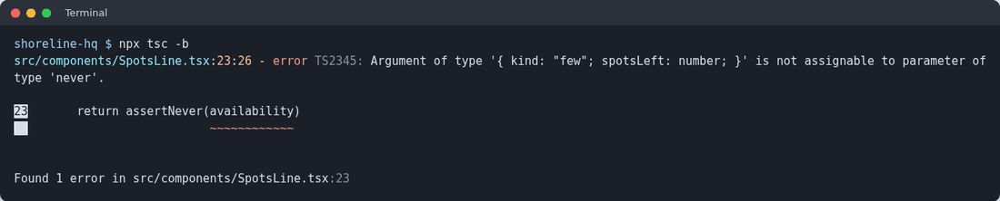
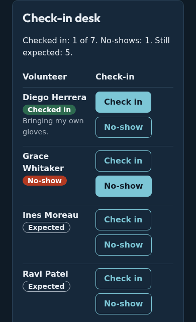

🗂️ Lesson 5.1: useReducer with Discriminated Unions
On cleanup morning, the crew lead stands at the sign-in table with a clipboard: Diego is here, Grace is not coming, oops, that tick was meant for Ines, undo it. Every one of those is a small change with a rule behind it, and some of them depend on what happened before. Today you give Shoreline Crew HQ that clipboard. You will describe every change as a typed action, put all the rules in one pure function called a reducer, and let TypeScript prove that no kind of change was forgotten. Module 5 starts here: organizing state so it stays understandable as the app grows.
🎯 Learning Objectives
By the end of this lesson, you will be able to:
- Recognize state whose updates follow rules, and explain why
useReducersuits it better than severaluseStatecalls - Describe every state change as an action, typed as a discriminated union, and read the errors TypeScript gives for a wrong action
- Write a pure reducer that returns new state instead of changing the old one, and type
useReduceranddispatchby letting TypeScript infer them - Use the
nevertype and anassertNeverhelper so the compiler reports every switch that misses a case - Build a check-in desk with undo for today's cleanup, and say which parts of it later lessons keep
📦 Code for this lesson
Starting code: lesson-17-start.zip · Finished code: lesson-17-end.zip. Each folder has a README with the commands to run it. Copy .env.example to .env.local in shoreline-hq before npm run dev.
In This Lesson
📋 When State Follows Rules
Everything the HQ remembers so far fits useState well: a search box's text, whether a card's details are open, a LoadState that one effect sets. Each piece changes in one or two obvious ways.
The check-in desk you build today is different. It has to remember two things that belong together:
- The marks: who is checked in and who is a no-show (everyone else is still expected).
- The history: every change so far, so Undo last change can put the previous mark back.
And there are rules. Checking someone in records a change in the history. Clicking the same mark again clears it, which is also a change. Pressing Check in for someone already checked in changes nothing and must not add a history entry. Undo takes the newest change and restores what was there before; with nothing to undo, it does nothing at all.
With two useState calls, every click handler would have to update both pieces the right way: setMarks(…) and setHistory(…), with the same rules copied into four handlers. Forget the history in one of them, and Undo quietly stops working for that button. The rules would be spread across the component, mixed in with the JSX.
💡 Mental model: the clipboard and the rule card
At the sign-in table, volunteers do not grab the clipboard and scribble on it. They say what happened: "Diego is here." The crew lead hears that, checks the rule card taped to the clipboard ("a tick in the Here column; note it in the log so we can undo it"), and writes the new state of the roster. In React terms, "Diego is here" is an action, saying it is dispatching, the rule card is the reducer, and the clipboard is the state. Components describe what happened; one function decides how the state changes.
Here is the loop you will build, for one click:
💡 Why this matters
Reducers are everywhere in React teams: useReducer in components, Redux Toolkit's slices (Lesson 7.3 compares them), form and wizard libraries, and state machines all use the same "state plus action gives new state" idea. A reducer is also the easiest code in a React app to test, because it is a plain function: Lesson 9.1 tests it without rendering anything. And typed actions are how TypeScript keeps a growing app honest: when someone adds a new kind of change, the compiler lists every place that has to handle it.
🧾 Reducers and Actions as Types
A reducer is a function with this shape: (state, action) => newState. It gets the current state and one action, and returns the next state. The name comes from the array method reduce, which folds a list of values into one; a reducer folds a list of actions, one at a time, into the current state.
Start small. The crew wants a quick tally on the beach: how many bags, and how many kilograms. Create src/Scratch.tsx (this lesson's experiment file, like Lesson 4.4's) and show it by temporarily making return <BagTally /> the first line of CurrentPage in App.tsx:
import { useReducer } from 'react'
interface Tally {
bags: number
weightKg: number
}
type TallyAction = { type: 'added'; weightKg: number } | { type: 'reset' }
function tallyReducer(tally: Tally, action: TallyAction): Tally {
switch (action.type) {
case 'added':
return { bags: tally.bags + 1, weightKg: tally.weightKg + action.weightKg }
case 'reset':
return { bags: 0, weightKg: 0 }
}
}
export function BagTally() {
const [tally, dispatch] = useReducer(tallyReducer, { bags: 0, weightKg: 0 })
return (
<section>
<p role="status">
{tally.bags} bags, {tally.weightKg} kg
</p>
<button type="button" onClick={() => dispatch({ type: 'added', weightKg: 4 })}>
Add a 4 kg bag
</button>
<button type="button" onClick={() => dispatch({ type: 'reset' })}>
Reset
</button>
</section>
)
}Measured on the dev server: two clicks on Add a 4 kg bag showed "2 bags, 8 kg", and Reset showed "0 bags, 0 kg". Read it from the top:
TallyActionis a discriminated union (Lesson 2.2). Each member is one kind of change, told apart by its literaltype. A member carries exactly the data that kind of change needs:addedneeds a weight,resetneeds nothing. Lesson 2.2 usedkindas the discriminant; for actions,typeis the name almost every React codebase and library uses, so the HQ follows it.- Action names say what happened:
added,reset. In the project you will also see commands such ascheckIn; both styles are common, and the point is the same: the action describes the change, not how to compute it. - The reducer switches on
action.type. Insidecase 'added', TypeScript has narrowedactionto{ type: 'added'; weightKg: number }, soaction.weightKgis a number. Incase 'reset'there is noweightKgto read. - It returns a new object and never changes
tally. React decides whether to render again by comparing the old and new state withObject.is(the same comparison as effect dependencies in Lesson 4.1). A changed old object looks "the same" to React.
The rules for a reducer
| Rule | Why |
|---|---|
| Pure: the same state and action always give the same result | React may call it more than once (Strict Mode does, on purpose); tests can call it with plain values |
| Never change the state you were given: copy, then change the copy | React compares old and new state to decide whether anything changed |
| No side effects: no requests, timers, logging to a server or reading the clock | Those belong in event handlers and effects; a reducer only calculates |
| Return a state every time, the same object when nothing changed | Returning the old state tells React there is nothing to redraw |
Wrong actions do not compile
Because dispatch knows the action type, a missing field or a misspelled type is caught before the browser sees it. Change the two buttons to dispatch({ type: 'added' }) and dispatch({ type: 'clear' }):
Expected output (npx tsc -b)
src/Scratch.tsx:27:53 - error TS2345: Argument of type '{ type: "added"; }' is not assignable to parameter of type 'TallyAction'.
Property 'weightKg' is missing in type '{ type: "added"; }' but required in type '{ type: "added"; weightKg: number; }'.
27 <button type="button" onClick={() => dispatch({ type: 'added' })}>
~~~~~~~~~~~~~~~~~
src/Scratch.tsx:8:37 - 'weightKg' is declared here.
8 type TallyAction = { type: 'added'; weightKg: number } | { type: 'reset' }
~~~~~~~~
src/Scratch.tsx:30:55 - error TS2322: Type '"clear"' is not assignable to type '"added" | "reset"'.
30 <button type="button" onClick={() => dispatch({ type: 'clear' })}>
~~~~
src/Scratch.tsx:8:22 - The expected type comes from property 'type' which is declared here on type 'TallyAction'
8 type TallyAction = { type: 'added'; weightKg: number } | { type: 'reset' }
~~~~
Found 2 errors in the same file, starting at: src/Scratch.tsx:27Read both messages as feedback, not as a scolding. The first says which member you meant (added) and which field it is missing, and even shows where weightKg is declared. The second lists every type that exists. In VS Code you get the same red underline the moment you type, and Ctrl+Space (also Ctrl+Space on a Mac) inside the quotes after type: suggests the valid names. Put the buttons back.
🪝 useReducer, Typed
const [tally, dispatch] = useReducer(tallyReducer, { bags: 0, weightKg: 0 }) takes the reducer and the starting state, and returns a pair, like useState: the current state, and dispatch, the function you call with an action. React runs your reducer with the current state and that action, stores the result, and renders the component again if it changed.
You annotate the reducer; TypeScript infers the rest. Measured in the project (making tsc print each type):
| You write | The type |
|---|---|
const [roster, dispatch] = useReducer(rosterReducer, initialRoster) | roster: RosterState |
| the same line | dispatch: ActionDispatch<[action: RosterAction]> |
roster.marks.get('s088') | Mark | undefined |
ActionDispatch<[action: RosterAction]> looks odd: React 19's types describe dispatch's parameters as a tuple (a list of parameter types), so that a reducer without actions can have a dispatch() with no arguments. Read it as "a function that takes one RosterAction and returns nothing". When you pass dispatch to a child component, the clearest prop type says exactly that: dispatch: (action: RosterAction) => void. The project does this, and the real dispatch fits it.
Two details worth knowing
dispatchnever changes. React gives you the same function on every render, so passing it down or listing it in an effect's dependencies causes no extra work.- Expensive starting state can be built lazily:
useReducer(reducer, input, init)callsinit(input)once, on the first render. The desk starts from a small constant, so it does not need this.
One more measured fact: in development, Strict Mode runs your reducer twice for each action, to flush out impure reducers. With a console.log as the first line of the project's reducer, one click on Check in printed "rosterReducer ran: checkIn" twice on the dev server, and the desk still counted one check-in. A pure reducer does not care how often it runs. A reducer that sent a request would send it twice (Common Mistakes).
🧩 Version note: useReducer<State, Action> is gone
Older articles pass both types by hand: useReducer<RosterState, RosterAction>(rosterReducer, initialRoster). React 19's types changed what those type parameters mean, so that line no longer compiles:
Expected output (npx tsc -b)
src/Scratch.tsx:5:44 - error TS2344: Type 'RosterAction' does not satisfy the constraint 'AnyActionArg'.
Type '{ type: "checkIn"; signupId: string; }' is not assignable to type 'AnyActionArg'.
5 const [roster] = useReducer<RosterState, RosterAction>(rosterReducer, initialRoster)
~~~~~~~~~~~~
Found 1 error in src/Scratch.tsx:5The fix is to delete the angle brackets: type the reducer's parameters and return value, and let useReducer infer everything from it.
🚫 never and Exhaustive Checks
Lesson 3.3 left you a warning: a switch over a union that misses a case still compiles, and the missing case quietly returns undefined. Today you close that gap.
The type with no values
never is the type that has no values at all. Nothing is assignable to it. That sounds useless, until you watch narrowing work through a switch. After case 'added' and case 'reset', TypeScript has removed both members of TallyAction, and in a default branch nothing is left: there, action has the type never. Add a third member without a case, and in default the action is that leftover member instead. So "is it never here?" is the same question as "did I handle every case?"
The return type already helps
Add a removed member to TallyAction but no case for it:
type TallyAction =
| { type: 'added'; weightKg: number }
| { type: 'removed'; weightKg: number }
| { type: 'reset' }Expected output (npx tsc -b)
src/Scratch.tsx:13:59 - error TS2366: Function lacks ending return statement and return type does not include 'undefined'.
13 function tallyReducer(tally: Tally, action: TallyAction): Tally {
~~~~~
Found 1 error in src/Scratch.tsx:13Because the reducer promises to return a Tally, TypeScript notices that one path falls off the end of the switch. That is useful, but the message points at the return type, not at the missing action. And it only works for functions with a declared return type: SpotsLine, whose return type is inferred, compiled without a word in Lesson 3.3.
assertNever names what is missing
The project's Step 1 adds a three-line helper, src/utils/assertNever.ts:
// For the end of a switch that handles every member of a union.
// TypeScript only accepts a call here when no case is left over (value is never),
// and if a value nobody expected arrives at runtime anyway, it fails loudly.
export function assertNever(value: never): never {
throw new Error(`Unexpected value: ${JSON.stringify(value)}`)
}- The parameter is
never, so the only call TypeScript accepts is one where the value has been narrowed to nothing. - The return type is also
never: this function never returns, it throws. That is whyreturn assertNever(action)fits any return type. - At runtime it is a safety net: if a value nobody planned for arrives anyway (bad data from outside, a JavaScript caller), the app fails loudly with the value in the message instead of silently drawing nothing.
Used as the default of the tally's reducer (try this after Step 1):
function tallyReducer(tally: Tally, action: TallyAction): Tally {
switch (action.type) {
case 'added':
return { bags: tally.bags + 1, weightKg: tally.weightKg + action.weightKg }
case 'reset':
return { bags: 0, weightKg: 0 }
default:
return assertNever(action)
}
}Now add the removed member again:
Expected output (npx tsc -b)
src/Scratch.tsx:21:26 - error TS2345: Argument of type '{ type: "removed"; weightKg: number; }' is not assignable to parameter of type 'never'.
21 return assertNever(action)
~~~~~~
Found 1 error in src/Scratch.tsx:21This message is the one you want: it names the exact action nobody handles, { type: "removed"; weightKg: number; }, and points at the switch that has to change. In a large app, adding a member to a union and running npx tsc -b gives you a to-do list: one error per switch that needs a new case.
✅ When to reach for it
Use an exhaustive check wherever code branches on a union: reducers, components that draw each kind differently (SpotsLine, Step 1), and functions that turn a union into text. A Record<Union, …> lookup table (Lesson 3.3's StatusBadge) is already exhaustive by itself, so it needs no assertNever.
⚖️ useState or useReducer?
Neither is "more advanced". They do the same job with different trade-offs, and React's own docs say so too. Some rules of thumb:
| Reach for… | When… | In the HQ |
|---|---|---|
useState | a value changes in one or two obvious ways, and the setter says it all | search text, a card's details toggle, the dialog's open flag |
useReducer | several values change together, updates follow rules, or the next state depends on the history | the check-in desk (marks + undo history) |
useReducer | you want the update logic out of the component, in a function you can read, reuse and test on its own | Step 3 runs the reducer in Node; Lesson 9.1 tests it |
| neither | the data lives on the server | events, sites and (from Lesson 5.2) the roster itself: useApi now, TanStack Query in Lesson 7.1 |
The last row shapes today's design. The desk's reducer does not hold the roster rows (names, notes); it only holds today's marks and their history. The rows arrive as a prop. That split is what lets the reducer last: Lesson 5.2 loads the rows from the API after sign-in and Lesson 7.1 moves that loading into TanStack Query, and neither touches rosterReducer. Lesson 7.2 does change it, on purpose: once the marks are saved to shoreline-api they are server data too, so they move into the cache and the reducer keeps only the undo history.
⚠️ Common Mistakes
⚠️ Changing the state in place
It is tempting to write the shortest thing that "works":
case 'checkIn':
state.marks.set(action.signupId, 'attended')
return stateThe project types the marks as ReadonlyMap, so TypeScript refuses:
Expected output (npx tsc -b)
src/reducers/rosterReducer.ts:53:19 - error TS2339: Property 'set' does not exist on type 'ReadonlyMap<string, Mark>'.
53 state.marks.set(action.signupId, 'attended')
~~~
Found 1 error in src/reducers/rosterReducer.ts:53With a plain Map type instead, the same code passes npx tsc -b and npm run lint. Measured in the browser: clicking Check in for Diego Herrera changed nothing on screen. The counts stayed at "Checked in: 0 of 7", the badge said "Expected", and the button was not pressed. The reducer returned the same object, so React saw no change and did not render. That is why the project's state uses ReadonlyMap and readonly Change[]: they turn a silent bug into a compile error. Copy first (new Map(old), [...list, item]), then change the copy.
⚠️ Side effects in the reducer
A reducer that saves to the API, starts a timer or reads Date.now() is no longer pure. Strict Mode runs reducers twice in development (measured above), so a request in a reducer would go out twice, and a time read twice could differ. Do side effects in the click handler (or an effect), and give the reducer only the results. In Lesson 7.2 the desk saves its marks this way: a handler sends them, and the reducer only records what changed.
⚠️ A default that swallows new actions
Many tutorials end every reducer with default: return state. It compiles even when a case is missing (measured with the removed action from above: npx tsc -b printed nothing), so a new action does nothing at all, and nobody is told. With a typed action union, every action that exists has a case, so the default can only be reached by a mistake: make it return assertNever(action).
🛠️ Project: The Check-in Desk
At the end of this project, today's cleanup (Tide Pool Morning Cleanup, /events/e17) has a Check-in desk: seven volunteers, a Check in and a No-show button for each, a live count, and Undo last change. Every click is a typed action handled by rosterReducer. Along the way, SpotsLine gets the exhaustive check Lesson 3.3 promised.
Start both servers (node server.ts in shoreline-api, npm run dev in shoreline-hq) and delete src/Scratch.tsx (and the line you added to CurrentPage) when you are done experimenting.
💡 Where does the roster come from?
The API's roster, GET /api/events/e17/signups, is for signed-in organizers only, because it lists people's contact details. Sign-in arrives in Lesson 5.2. Until then, the desk practices on a saved copy of today's roster with names and notes only. The reason is security, not size: every file in src/ ends up in the JavaScript that every visitor downloads, so an email address or phone number in it would be public. Lesson 5.2 replaces the copy with the real request, and the reducer will not change.
Step 1: assertNever, and SpotsLine's promised check (8 min)
Create src/utils/assertNever.ts with the helper from the never section. Then use it in src/components/SpotsLine.tsx. Add the import:
+import { assertNever } from '../utils/assertNever.ts'
import type { Availability } from '../utils/availability.ts'and a default at the end of the switch:
case 'closed':
return null
+ default:
+ return assertNever(availability)
}Now repeat Lesson 3.3's Exercise 3 experiment. In src/utils/availability.ts, add a few kind to the union (and nothing else):
export type Availability =
| { kind: 'open'; spotsLeft: number }
| { kind: 'few'; spotsLeft: number }
| { kind: 'full' }
| { kind: 'closed' }
Availability, and TypeScript points at the one switch that does not handle it yet. Before Lesson 5.1 this compiled, and the card quietly lost its spots line.Expected output (npx tsc -b)
src/components/SpotsLine.tsx:23:26 - error TS2345: Argument of type '{ kind: "few"; spotsLeft: number; }' is not assignable to parameter of type 'never'.
23 return assertNever(availability)
~~~~~~~~~~~~
Found 1 error in src/components/SpotsLine.tsx:23In Lesson 3.3 this change compiled and the Jetty Rocks card lost its spots line. Now the compiler sends you to the one place that needs a new case. Remove the few line again; the HQ keeps three kinds.
Step 2: The reducer (16 min)
Create the folder src/reducers/ and the file src/reducers/rosterReducer.ts:
import { assertNever } from '../utils/assertNever.ts'
/** What the check-in desk records about one sign-up today */
export type Mark = 'attended' | 'no-show'
/** Every change the check-in desk can make: one object type per kind of change */
export type RosterAction =
| { type: 'checkIn'; signupId: string }
| { type: 'markNoShow'; signupId: string }
| { type: 'clear'; signupId: string }
| { type: 'undo' }
/** One change, remembered so that it can be undone */
interface Change {
signupId: string
before: Mark | undefined
}
export interface RosterState {
/** sign-up id → mark; anyone without a mark is still expected */
marks: ReadonlyMap<string, Mark>
/** the changes so far, newest last */
history: readonly Change[]
}
export const initialRoster: RosterState = { marks: new Map(), history: [] }
// A copy of the marks with one of them changed: the old Map is never touched
function withMark(marks: ReadonlyMap<string, Mark>, signupId: string, mark: Mark | undefined) {
const next = new Map(marks)
if (mark === undefined) {
next.delete(signupId)
} else {
next.set(signupId, mark)
}
return next
}
function setMark(state: RosterState, signupId: string, mark: Mark | undefined): RosterState {
const before = state.marks.get(signupId)
if (before === mark) {
return state
}
return {
marks: withMark(state.marks, signupId, mark),
history: [...state.history, { signupId, before }],
}
}
export function rosterReducer(state: RosterState, action: RosterAction): RosterState {
switch (action.type) {
case 'checkIn':
return setMark(state, action.signupId, 'attended')
case 'markNoShow':
return setMark(state, action.signupId, 'no-show')
case 'clear':
return setMark(state, action.signupId, undefined)
case 'undo': {
const last = state.history.at(-1)
if (last === undefined) {
return state
}
return {
marks: withMark(state.marks, last.signupId, last.before),
history: state.history.slice(0, -1),
}
}
default:
return assertNever(action)
}
}Read it in four parts:
- The vocabulary.
Markis what the desk can record.RosterActionlists the four kinds of change: three carry thesignupIdthey are about,undoneeds nothing. Sign-up ids (s088) come from the API, and since one person signs up once per cleanup, a sign-up id identifies one row. - The state.
marksis aMapfrom sign-up id toMark; anyone missing from it is still expected, so there is no third "expected" value to keep in sync.historyremembers, for each change, which sign-up it touched and what its mark was before. Both are read-only types: the compiler stops any code from changing them in place (Common Mistakes). - Two helpers.
withMarkcopies the map and changes the copy.setMarkholds the rules shared by three actions: if the mark would not change, return the same state (no history entry, no render); otherwise return new marks and a history with one more entry.noUncheckedIndexedAccess(Lesson 2.4) is not involved here:Map.getalways returnsMark | undefined, andundefinedmeans "expected". - The reducer is now short: one line per action, plus
undo, which takes the newest change withat(-1)(possiblyundefined, so it is checked), puts itsbeforemark back, and drops it from the history withslice(0, -1). Thedefaultis the exhaustive check. The braces aftercase 'undo':givelastits own block, so another case could use the same name.
Step 3: Try the reducer without React (5 min)
A reducer is a plain function, so Node can run it (Lesson 1.1: Node strips the types and runs the file). Create scratch-roster.ts in the shoreline-hq folder itself, next to package.json:
import { initialRoster, rosterReducer } from './src/reducers/rosterReducer.ts'
const afterCheckIn = rosterReducer(initialRoster, { type: 'checkIn', signupId: 's088' })
const afterNoShow = rosterReducer(afterCheckIn, { type: 'markNoShow', signupId: 's091' })
const afterUndo = rosterReducer(afterNoShow, { type: 'undo' })
console.log(afterNoShow.marks)
console.log(afterUndo.marks)
console.log('history:', afterUndo.history.length)
console.log('first state untouched:', initialRoster.marks.size === 0)node scratch-roster.tsExpected output
Map(2) { 's088' => 'attended', 's091' => 'no-show' }
Map(1) { 's088' => 'attended' }
history: 1
first state untouched: trueThree actions, three new states, and the first state is untouched: initialRoster still has no marks. No component, no browser, no clicking. This is what Lesson 9.1 turns into automated tests. Delete scratch-roster.ts when you are done.
Step 4: The roster table (14 min)
Create src/components/RosterTable.tsx:
import type { RosterEntry } from '../api/types.ts'
import type { Mark, RosterAction } from '../reducers/rosterReducer.ts'
import { Badge, type BadgeTone } from './Badge.tsx'
import buttonStyles from './Button.module.css'
import styles from './RosterTable.module.css'
import { VisuallyHidden } from './VisuallyHidden.tsx'
/** Only what the table shows: a full RosterEntry from the API fits too */
export type RosterRow = Pick<RosterEntry, 'id' | 'note'> & {
volunteer: Pick<RosterEntry['volunteer'], 'name'>
}
const markBadges: Record<Mark | 'expected', { label: string; tone: BadgeTone }> = {
expected: { label: 'Expected', tone: 'neutral' },
attended: { label: 'Checked in', tone: 'success' },
'no-show': { label: 'No-show', tone: 'danger' },
}
interface RosterTableProps {
entries: RosterRow[]
marks: ReadonlyMap<string, Mark>
dispatch: (action: RosterAction) => void
}
export function RosterTable({ entries, marks, dispatch }: RosterTableProps) {
return (
<table className={styles.table}>
<thead>
<tr>
<th scope="col">Volunteer</th>
<th scope="col">Check-in</th>
</tr>
</thead>
<tbody>
{entries.map((entry) => {
const signupId = entry.id
const mark = marks.get(signupId)
const { label, tone } = markBadges[mark ?? 'expected']
return (
<tr key={signupId}>
<th scope="row">
{entry.volunteer.name}{' '}
<span className={styles.mark}>
<Badge label={label} tone={tone} />
</span>
{entry.note !== '' && <span className={styles.note}>{entry.note}</span>}
</th>
<td className={styles.buttons}>
<button
type="button"
className={buttonStyles.secondary}
aria-pressed={mark === 'attended'}
onClick={() =>
dispatch(
mark === 'attended' ? { type: 'clear', signupId } : { type: 'checkIn', signupId },
)
}
>
Check in<VisuallyHidden> for {entry.volunteer.name}</VisuallyHidden>
</button>
<button
type="button"
className={buttonStyles.secondary}
aria-pressed={mark === 'no-show'}
onClick={() =>
dispatch(
mark === 'no-show' ? { type: 'clear', signupId } : { type: 'markNoShow', signupId },
)
}
>
No-show<VisuallyHidden> for {entry.volunteer.name}</VisuallyHidden>
</button>
</td>
</tr>
)
})}
</tbody>
</table>
)
}RosterRowasks only for what the table reads: the sign-up'sidandnote, and the volunteer'sname, picked from the API's ownRosterEntrytype (Lesson 2.4'sPick). TypeScript compares shapes, not names, so in Lesson 5.2 a realRosterEntry[]from the API (which has more fields) can be passed in without changing this component.- The table gets
dispatchas a prop, typed as(action: RosterAction) => void. It does not need to know the rules; it only reports what happened. Each button sends one of three actions, chosen with a ternary: pressing a pressed button sendsclear. - Toggle buttons that stay put.
aria-pressedtells screen readers whether each button is on ("Check in for Diego Herrera, toggle button, pressed"), and the CSS fills a pressed button. The buttons never disappear, so the keyboard focus stays where it was after a click (Lesson 4.3's lesson about vanishing buttons). - A real table: column headers with
scope="col", and each volunteer's name as a row header (th scope="row"), so a screen reader announces whose row a button belongs to.VisuallyHiddenadds the name to each button's label, like the event cards' "Show details for…". markBadgesis a lookup table with aRecordoverMark | 'expected': exhaustive without a switch, as inStatusBadge.
Its styles, src/components/RosterTable.module.css:
.table {
width: 100%;
border-collapse: collapse;
}
.table tr {
border-bottom: 1px solid var(--border);
}
.table th,
.table td {
padding: 0.5rem 0.75rem 0.5rem 0;
text-align: left;
vertical-align: top;
}
/* A badge never breaks across two lines */
.mark {
white-space: nowrap;
}
.note {
display: block;
color: var(--text-muted);
font-weight: normal;
font-size: 0.9rem;
}
/* Buttons sit side by side and wrap onto a second line on a phone */
.buttons button {
margin: 0 0.5rem 0.5rem 0;
white-space: nowrap;
}
/* A pressed toggle looks like a primary button */
.buttons [aria-pressed='true'] {
background: var(--link);
color: var(--page);
}Then the saved roster, src/data/sampleRoster.ts (create the src/data/ folder again; Lesson 4.1 emptied it):
import type { RosterRow } from '../components/RosterTable.tsx'
// A saved copy of today's roster for Tide Pool Morning Cleanup, from GET /api/events/e17/signups.
// That request needs an organizer's sign-in (Lesson 5.2); until then the check-in desk practices here.
// Names and notes only: everything in src/ ships to every visitor's browser, so no emails or phones.
export const sampleRosterEventId = 'e17'
export const sampleRoster: RosterRow[] = [
{ id: 's088', note: 'Bringing my own gloves.', volunteer: { name: 'Diego Herrera' } },
{ id: 's091', note: '', volunteer: { name: 'Grace Whitaker' } },
{ id: 's094', note: '', volunteer: { name: 'Ines Moreau' } },
{ id: 's092', note: '', volunteer: { name: 'Ravi Patel' } },
{ id: 's090', note: '', volunteer: { name: 'Sofia Lindgren' } },
{ id: 's093', note: 'Bringing my own gloves.', volunteer: { name: 'Tariq Mensah' } },
{ id: 's089', note: '', volunteer: { name: 'Theo Nakamura' } },
]The ids, names and notes are the API's own sample data for today's cleanup, so they match what Lesson 5.2 loads for real.
Step 5: The desk on the cleanup page (12 min)
Create src/components/CheckInDesk.tsx, the component that owns the reducer:
import { useReducer } from 'react'
import { initialRoster, rosterReducer } from '../reducers/rosterReducer.ts'
import buttonStyles from './Button.module.css'
import cardStyles from './Card.module.css'
import styles from './CheckInDesk.module.css'
import { RosterTable, type RosterRow } from './RosterTable.tsx'
interface CheckInDeskProps {
entries: RosterRow[]
}
// Today's roster: who is here, who did not come, and an undo for slips of the finger
export function CheckInDesk({ entries }: CheckInDeskProps) {
const [roster, dispatch] = useReducer(rosterReducer, initialRoster)
const here = entries.filter((entry) => roster.marks.get(entry.id) === 'attended').length
const noShows = entries.filter((entry) => roster.marks.get(entry.id) === 'no-show').length
const expected = entries.length - here - noShows
const canUndo = roster.history.length > 0
return (
<section className={cardStyles.card} aria-labelledby="check-in-desk">
<h2 id="check-in-desk">Check-in desk</h2>
<p role="status">
Checked in: {here} of {entries.length}. No-shows: {noShows}. Still expected: {expected}.
</p>
<RosterTable entries={entries} marks={roster.marks} dispatch={dispatch} />
<div className={styles.actions}>
<button
type="button"
className={buttonStyles.secondary}
aria-disabled={!canUndo}
onClick={() => dispatch({ type: 'undo' })}
>
Undo last change
</button>
</div>
<p className={styles.practice}>
Practice copy: these marks stay in this tab. Lesson 5.2 loads the real roster after sign-in, and
Lesson 7.2 saves the marks to shoreline-api.
</p>
</section>
)
}useReducer(rosterReducer, initialRoster): no type arguments;rosteris aRosterStateanddispatchaccepts onlyRosterActions.- The counts are derived from the marks and the rows on every render (Lesson 3.4), never stored. The reducer would otherwise have to keep three numbers in sync with the map.
- The count line has
role="status", so a screen reader hears "Checked in: 2 of 7…" after each click. - Undo with nothing to undo uses
aria-disabledinstead ofdisabled. Adisabledbutton cannot hold focus, so pressing Undo for the last time would throw keyboard users back to the top of the page. Witharia-disabledthe button stays focusable, screen readers announce it as dimmed, and a click is harmless: the reducer returns the same state when the history is empty. - The section is labeled by its heading (
aria-labelledby), which makes it a named region screen reader users can jump to.
And src/components/CheckInDesk.module.css:
.actions {
margin-top: 1rem;
}
/* Still focusable, so keyboard users do not lose their place; it just does nothing */
.actions [aria-disabled='true'] {
border-style: dashed;
cursor: not-allowed;
}
.practice {
margin-bottom: 0;
color: var(--text-muted);
font-size: 0.9rem;
}Finally, put the desk on today's cleanup page. In src/pages/EventPage.tsx, add two imports:
import { eventPromise, forgetEvent } from '../api/eventPromises.ts'
+import { CheckInDesk } from '../components/CheckInDesk.tsx'
import { ErrorBoundary, type FallbackProps } from '../components/ErrorBoundary.tsx' import { StatusBadge } from '../components/StatusBadge.tsx'
+import { sampleRoster, sampleRosterEventId } from '../data/sampleRoster.ts'
import { useDocumentTitle } from '../hooks/useDocumentTitle.ts'and, in EventDetails, the desk before "Where to meet":
)}
+ {event.id === sampleRosterEventId && <CheckInDesk entries={sampleRoster} />}
<h2>Where to meet</h2>The desk sits inside EventDetails, so it appears only once the cleanup has loaded, and only for the cleanup the saved roster belongs to. Open /events/e17 and try it:

rosterReducer works out the new marks, and the counts are derived from them.Step 6: Check it, with the keyboard too (5 min)
npx tsc -b
npm run lint
npm run buildExpected output (npm run lint)
> shoreline-hq@0.0.0 lint
> oxlint
Found 0 warnings and 0 errors.
Finished in 15ms on 43 files with 150 rules using 20 threads.Then click through the desk, measured on the dev server and the build: Check in for Diego Herrera, No-show for Grace Whitaker and Check in for Ines Moreau gave "Checked in: 2 of 7. No-shows: 1. Still expected: 4.", with the focus still on Ines's button. Undo last change gave "Checked in: 1 of 7. No-shows: 1. Still expected: 5." Pressing Grace's pressed No-show again cleared it ("No-shows: 0"), and three more Undos brought everything back to "Checked in: 0 of 7". Now do the same with Tab, Shift+Tab and Space only. On a phone-sized window the buttons wrap under each other, and the page does not scroll sideways:

Other cleanups, such as /events/e08, show no desk. Reload /events/e17 and the marks are gone: they live in this component's state, in this tab, which is exactly what "practice copy" promises.
Your own project: look at your Lesson 11.1 app idea for one piece of state with rules, where several values change together or people will want an undo. Write its actions as a TypeScript union on paper first: what can happen, and what does each kind of change need to carry?
✅ Project Completion Checklist
- ☐
SpotsLineends its switch withreturn assertNever(availability), and a newAvailabilitykind makesnpx tsc -bpoint at it - ☐
rosterReducerhandlescheckIn,markNoShow,clearandundo, with read-only state and an exhaustivedefault - ☐
node scratch-roster.tsprinted the marks before and after undo (and the file is deleted) - ☐
/events/e17shows the Check-in desk with seven volunteers, live counts and a working Undo last change;/events/e08shows none - ☐ The desk works with the keyboard alone, and focus stays on the button you pressed
- ☐
npx tsc -b,npm run lintandnpm run buildpass, andsrc/Scratch.tsxis deleted
🏋️ Hands-on Exercises
Exercises 1 and 2 are part of the lesson (about 15 minutes together, included in the lesson time).
🏋️ Exercise 1: Start over
After a practice round, the crew lead wants to wipe the desk clean in one go. Add a startOver action and a Start over button next to Undo. Add the action to the union first, run npx tsc -b, and let the error tell you where to go next.
💡 Hint
startOver needs no data, like undo. Which existing value already is "a desk with nothing on it"?
✅ Solution
Add | { type: 'startOver' } to RosterAction. The compiler answers:
Expected output (npx tsc -b)
src/reducers/rosterReducer.ts:70:26 - error TS2345: Argument of type '{ type: "startOver"; }' is not assignable to parameter of type 'never'.
70 return assertNever(action)
~~~~~~
Found 1 error in src/reducers/rosterReducer.ts:70Add the case before the default:
case 'startOver':
return initialRoster
default:
return assertNever(action)and the button after Undo in CheckInDesk:
<button
type="button"
className={buttonStyles.secondary}
onClick={() => dispatch({ type: 'startOver' })}
>
Start over
</button>Measured: with Diego checked in and Theo a no-show, Start over showed "Checked in: 0 of 7. No-shows: 0. Still expected: 7." and Undo became dimmed. Returning initialRoster also empties the history, so Start over itself cannot be undone; on a real cleanup morning a confirmation (Lesson 4.3's ConfirmDialog) would be kind. The course's code does not keep this button.
🏋️ Exercise 2: Predict, then run
Starting from initialRoster, these actions run one after another, all for Diego Herrera (s088): checkIn, checkIn, markNoShow, undo, undo, undo. After each one, write down Diego's mark, the history's length, and whether the reducer returned the same state object. Then check with this script (save it as ex2-predict.ts next to package.json, run node ex2-predict.ts, delete it after):
import { initialRoster, rosterReducer, type RosterAction } from './src/reducers/rosterReducer.ts'
const actions: RosterAction[] = [
{ type: 'checkIn', signupId: 's088' },
{ type: 'checkIn', signupId: 's088' },
{ type: 'markNoShow', signupId: 's088' },
{ type: 'undo' },
{ type: 'undo' },
{ type: 'undo' },
]
let state = initialRoster
for (const action of actions) {
const next = rosterReducer(state, action)
console.log(action.type, next.marks.get('s088') ?? 'expected', next.history.length, next === state)
state = next
}💡 Hint
Read setMark's first if, and undo's. When does the reducer hand back the state it was given?
✅ Solution
Expected output
checkIn attended 1 false
checkIn attended 1 true
markNoShow no-show 2 false
undo attended 1 false
undo expected 0 false
undo expected 0 trueThe second checkIn changes nothing, so it returns the same state (true) and adds no history: one Undo will not be "wasted" on it. markNoShow remembers that Diego was attended before, so the first Undo puts him back to checked in, and the second to expected. The third Undo finds an empty history and returns the same state: in the app, that is the harmless click on the dimmed button.
🏋️ Exercise 3: An Undo that says what it undoes (Stretch)
Optional stretch, not counted in the lesson time (about 20 minutes).
"Undo last change" makes people guess. Make the button say "Undo: Diego Herrera checked in", "Undo: Sofia Lindgren marked as a no-show" or "Undo: Sofia Lindgren back to expected", and keep "Undo last change" when there is nothing to undo. Do not change the reducer.
💡 Hint
The newest history entry tells you whose mark changed. Because it is the newest change, the person's current mark is what that change set. A Record<Mark | 'expected', string> turns a mark into words.
✅ Solution
In CheckInDesk.tsx, import the Mark type (import { initialRoster, rosterReducer, type Mark } from '../reducers/rosterReducer.ts'), add a table above the props:
const changeWords: Record<Mark | 'expected', string> = {
attended: 'checked in',
'no-show': 'marked as a no-show',
expected: 'back to expected',
}replace canUndo with:
const last = roster.history.at(-1)
const lastName = entries.find((entry) => entry.id === last?.signupId)?.volunteer.name
const undoLabel =
last === undefined || lastName === undefined
? 'Undo last change'
: `Undo: ${lastName} ${changeWords[roster.marks.get(last.signupId) ?? 'expected']}`and use them on the button: aria-disabled={last === undefined} and {undoLabel} as its text. Measured: the label went from "Undo last change" to "Undo: Diego Herrera checked in", then "Undo: Sofia Lindgren marked as a no-show", "Undo: Sofia Lindgren back to expected" after clearing her, and "Undo: Sofia Lindgren marked as a no-show" again after one Undo. last?.signupId keeps find happy when the history is empty. The course's code keeps the shorter label.
🎯 Quick Quiz
🎯 Check Your Understanding
Question 1: In the check-in desk, what does a click on Check in for Diego Herrera do?
Question 2: TallyAction is { type: 'added'; weightKg: number } | { type: 'reset' }. What does npx tsc -b say about dispatch({ type: 'added' })?
Question 3: A teammate adds { type: 'startOver' } to RosterAction but writes no case for it. The reducer ends with default: return assertNever(action). What happens?
Question 4: A reducer does state.marks.set(id, 'attended') and then return state, with marks typed as a plain Map. What do people see after clicking Check in?
Question 5: Lesson 5.2 loads the real roster from the API after sign-in. Why does today's design keep the roster rows out of rosterReducer's state?
❓ Common Questions at This Stage
Is useReducer the same thing as Redux?
Same idea, different scope. Redux keeps one store for the whole app, outside React, with reducers and actions very much like today's. useReducer keeps one component's state. Lesson 7.3 shows Redux Toolkit next to Zustand, and you will recognize its slices as reducers with typed actions. Many apps never need Redux; reducers in components plus a server-state library (Lesson 7.1) cover a lot.
Can I share a reducer's state with components far away?
Pass state and dispatch down as props, as the desk does with RosterTable. When the components are many levels apart, put them in a context instead: Lesson 5.2 introduces typed context with the HQ's sign-in, and the same pattern works for a reducer's dispatch.
Copying a Map on every click: isn't that slow?
Not at this size. A desk has tens of rows; copying a map of a few dozen entries is far below anything a person can notice. Lesson 5.3 shows how to measure rendering before worrying about it. For deeply nested state, libraries such as Immer let you write "change this" code that produces copies for you; with flat state like the desk's, plain copies are clear enough.
Why a Map and not a plain object for the marks?
Both work. A Map has a clear API for "set", "delete" and "get, possibly undefined", and ReadonlyMap gives a read-only view in one word. A plain object would need Partial<Record<string, Mark>> and a rest-spread to remove a key. Plain objects are easier to print as JSON, which matters when state is saved or sent; Lesson 7.2 sends the marks as separate requests anyway.
🌟 Going Further: Bonus Challenge
Add a Redo. A redo needs a second list, the changes you undid, and a rule for when that list is thrown away (a new mark after an undo makes the old future meaningless). Write the new state type and the two new action types first, let assertNever show you where they go, and test the rules with a Node script like Step 3's before you touch the component.
📓 Learning Journal
Take five to ten minutes and jot down:
- Key concepts you learned today
- Techniques that clicked (and the ones that have not, yet)
- Questions or confusion to look up or bring to the next session
- Ideas to try on your own
- Progress and feelings: how did this lesson go for you?
✍️ This lesson's prompt: Explain never to a friend who knows JavaScript but not TypeScript, in three sentences and without the word "type" in the first one. Then list every switch and lookup table in your HQ and mark which ones are now exhaustive. Which one would you have forgotten to update first if a fifth event status appeared?
📝 Lesson Summary
🎓 Key Takeaways
useReducerfits state whose updates follow rules or change several values together: components dispatch actions that say what happened, and one reducer decides the next state- Actions are a discriminated union on
type; each member carries only the data it needs, and a wrong or incomplete action is a compile error - A reducer is pure: no changes to the state it got, no side effects, the same state back when nothing changed (Strict Mode runs it twice in development)
- Type the reducer, not the Hook:
useReducerinfers the state anddispatch;useReducer<State, Action>from older articles no longer compiles neveris what is left after every case is handled;assertNeverin adefaultturns "I forgot a case" into an error that names the missing memberReadonlyMapandreadonlyarrays turn in-place changes, which React would not notice, into compile errors- Keep server data out of the reducer: the desk's reducer holds only today's marks and history, so later lessons can change where the rows come from without touching it
| If you want to… | Go to |
|---|---|
| Look up React patterns quickly | React Cheat Sheet |
Look up unions, narrowing and never | TypeScript Cheat Sheet |
Read React's reference for useReducer | React: useReducer |
| Read React's guide to moving logic into a reducer | React: Extracting State Logic into a Reducer |
| Read the TypeScript handbook on exhaustiveness checking | TypeScript: Exhaustiveness checking |
🏆 What You've Accomplished
- You wrote your first reducer with typed actions, and ran it in Node without React
- You read TypeScript's errors for a missing field, a misspelled action and an unhandled case, and used each one as directions
- You kept Lesson 3.3's promise:
SpotsLinecan no longer miss a new kind of availability silently - You built an accessible check-in desk with toggle buttons, live counts and undo, on today's cleanup page
- You designed state that will survive sign-in and a data library
🔭 Looking Ahead
The desk practices on a saved copy because the real roster needs sign-in. In Lesson 5.2: Typed Context organizers sign in with shoreline-api, the session is shared with every component through a typed context (with a useAuth() Hook that can never return "undefined" by accident), drafts appear for organizers, and the check-in desk loads today's real roster.
📋 Before the Next Lesson
- Make sure
npx tsc -b,npm run lintandnpm run buildpass, thefewline is gone fromavailability.ts, andscratch-roster.tsandsrc/Scratch.tsxare deleted - Run through the desk once with the keyboard only
- Keep your Lesson 11.1 action list (the union you wrote on paper) with your plan
🌱 Encouragement for the Journey
Today you wrote code whose main job is to make mistakes impossible to miss: read-only types, an action union, a function that only exists to fail compilation. If that felt like extra ceremony, notice what it bought you: three different slips (a missing field, a misspelled action, a forgotten case) were each caught with a message that said exactly what to fix. That is the deal TypeScript offers, and it gets better the bigger the app grows. If the never trick still feels like magic, come back to it after a few more switches; most developers need to see it catch a real bug once before it clicks. You just started Module 5 with a feature crew leads would actually use on a beach. Well done.